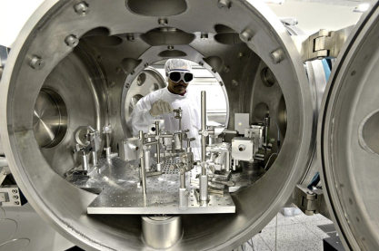

Research infrastructure and deep tech
ELIgnite
ELIgnite connects the ELI ERIC research infrastructure with innovation teams and industry. Technology Centre Prague is a project partner, contributing to cascade funding and business mentoring.
What support it offers
- Access pathways to ELI ERIC experimental capabilities and expertise.
- Technology validation and commercial readiness development.
- Business mentoring and project opportunities subject to programme rules.
Who the programme is for
For deep-tech companies and research teams with potential to use ELI ERIC capabilities. Areas include medical technology, security and space applications, clean energy, semiconductors and AI.

Participation and financial support follow project rules and calls. An initial discussion can assess how your concept connects with ELI ERIC capabilities.
Services: Technology and market validation · Innovation commercialisation · Funding and projects
Public source: TC Praha